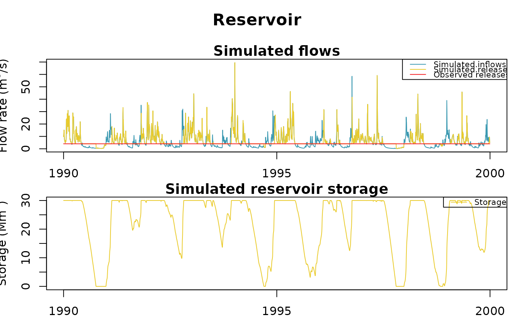
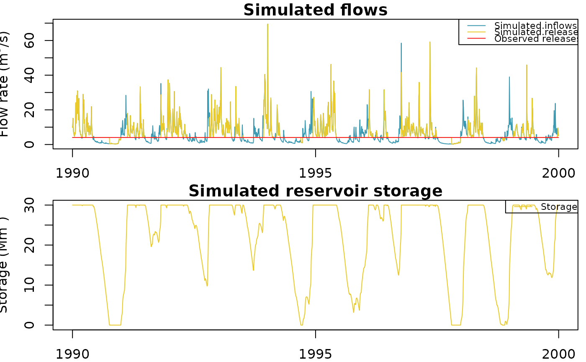

R/plot.OutputsModelReservoir.R
plot.OutputsModelReservoir.RdPlot simulated reservoir volume, inflows and released flows time series on a reservoir node
# S3 method for class 'OutputsModelReservoir'
plot(x, Qobs = NULL, ...)Object returned by RunModel_Reservoir
numeric time series of observed flow (for the same time steps than simulated) [m3/time step]
Further arguments passed to plot.Qm3s
Function used for side effect.
#######################################################
# Daily time step simulation of a reservoir filled by #
# one catchment supplying a constant released flow #
#######################################################
library(airGRiwrm)
data(L0123001)
# Inflows comes from a catchment of 360 km² modeled with GR4J
# The reservoir receives directly the inflows
db <- data.frame(id = c(BasinInfo$BasinCode, "Reservoir"),
length = c(0, NA),
down = c("Reservoir", NA),
area = c(BasinInfo$BasinArea, NA),
model = c("RunModel_GR4J", "RunModel_Reservoir"),
stringsAsFactors = FALSE)
griwrm <- CreateGRiwrm(db)
plot(griwrm)
# Formatting of GR4J inputs for airGRiwrm (matrix or data.frame with one
# column by sub-basin and node IDs as column names)
Precip <- matrix(BasinObs$P, ncol = 1)
colnames(Precip) <- BasinInfo$BasinCode
PotEvap <- matrix(BasinObs$E, ncol = 1)
colnames(PotEvap) <- BasinInfo$BasinCode
# We propose to compute the constant released flow from
# the median of the natural flow
# The value is in m3 by time step (day)
Qrelease <- median(BasinObs$Qls, na.rm = TRUE) / 1000 * 86400
# Formatting of reservoir released flow inputs for airGRiwrm (matrix or data.frame
# with one column by node and node IDs as column names)
Qrelease <- data.frame(Reservoir = rep(Qrelease, length(BasinObs$DatesR)))
InputsModel <- CreateInputsModel(griwrm, DatesR = BasinObs$DatesR,
Precip = Precip,
PotEvap = PotEvap,
Qinf = Qrelease)
#> Warning: Use of the `Qinf` parameter for reservoir releases is deprecated, please use `Qrelease` instead.
#> Processing `Qrelease <- cbind(Qrelease, Qinf[, c("Reservoir"])`...
#> CreateInputsModel.GRiwrm: Processing sub-basin L0123001...
#> CreateInputsModel.GRiwrm: Processing sub-basin Reservoir...
## run period selection
Ind_Run <- seq(which(format(BasinObs$DatesR, format = "%Y-%m-%d")=="1990-01-01"),
which(format(BasinObs$DatesR, format = "%Y-%m-%d")=="1999-12-31"))
# Creation of the GRiwmRunOptions object
RunOptions <- CreateRunOptions(
InputsModel,
IndPeriod_Run = Ind_Run,
IndPeriod_WarmUp = seq.int(Ind_Run[1] - 365, length.out = 365)
)
# Initial states of the reservoir can be provided by the user
# For example for starting with an empty reservoir...
RunOptions[["Reservoir"]]$IniStates <- c("Reservoir.V" = 0)
# calibration criterion: preparation of the InputsCrit object
Qobs <- data.frame("L0123001" = BasinObs$Qmm[Ind_Run])
InputsCrit <- CreateInputsCrit(InputsModel,
ErrorCrit_KGE2,
RunOptions = RunOptions,
Obs = Qobs)
#> No observations found for node "Reservoir"
#> You must fix the parameters of this node in CreateCalibOptions
# preparation of CalibOptions object
CalibOptions <- CreateCalibOptions(InputsModel)
#> Warning: The node Reservoir which uses `RunModel_Reservoir` must have its parameters fixed:
#> You can either fix these parameters afterward by using the command:
#> `CalibOptions[[id_of_reservoir_node]]$FixedParam <- c(Vmax, celerity)`
#> Or by calling `CreateCalibOptions(InputsModel, FixedParam = list(id_of_reservoir_node = c(Vmax, celerity)))`
# Parameters of RunModel_Reservoir must be fixed
CalibOptions[["Reservoir"]]$FixedParam <- c(Vmax = 30E6, celerity = 0.5)
OC <- Calibration(
InputsModel = InputsModel,
RunOptions = RunOptions,
InputsCrit = InputsCrit,
CalibOptions = CalibOptions
)
#> Calibration.GRiwrmInputsModel: Processing sub-basin L0123001...
#> Grid-Screening in progress (
#> 0%
#> 20%
#> 40%
#> 60%
#> 80%
#> 100%)
#> Screening completed (81 runs)
#> Param = 169.017, -0.020, 83.096, 1.944
#> Crit. KGE2[Q] = 0.8231
#> Steepest-descent local search in progress
#> Calibration completed (28 iterations, 291 runs)
#> Param = 147.886, 0.347, 58.983, 2.345
#> Crit. KGE2[Q] = 0.8548
#> Calibration.GRiwrmInputsModel: Processing sub-basin Reservoir...
#> Parameters already fixed - no need for calibration
#> Param = 30000000.000, 0.500
# Model parameters
Param <- lapply(OC, "[[", "ParamFinalR")
# Running simulation
OutputsModel <- RunModel(InputsModel, RunOptions, Param)
#> RunModel.GRiwrmInputsModel: Processing sub-basin L0123001...
#> RunModel.GRiwrmInputsModel: Processing sub-basin Reservoir...
# Plot the simulated flows and volumes on all nodes
Qobs <- cbind(BasinObs$Qmm[Ind_Run], Qrelease[Ind_Run, ])
colnames(Qobs) <- griwrm$id
plot(OutputsModel, Qobs = Qobs)

# N.B. "Observed releases" should be considered as "Target releases" here
# The plot for the reservoir can also be plotted alone
plot(OutputsModel$Reservoir)
